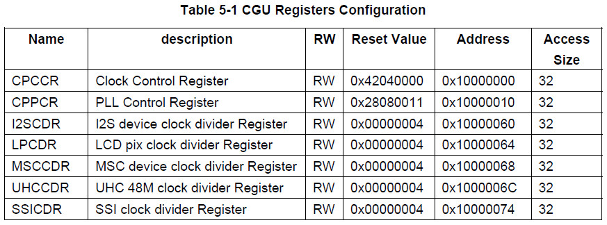

參考資訊：
https://johnloomis.org/microchip/pic32/memory/memory.html
MIPS Memory Map
| 0xf0000000 | (kseg2) mapped |
| 0xe0000000 | |
| 0xd0000000 | |
| 0xc0000000 | |
| 0xb0000000 | (kseg1) unmapped uncached |
| 0xa0000000 | |
| 0x90000000 | (kseg0) unmapped cached |
| 0x80000000 | |
| 0x70000000 | (kuseg) user space |
| 0x60000000 | |
| 0x50000000 | |
| 0x40000000 | |
| 0x30000000 | |
| 0x20000000 | |
| 0x10000000 |
Description
| kseg2 | 0xc0000000~0xffffffff | 1GB | This area is only accessible in kernel mode but is translated by through the MMU. Unless you are writing a serious operating system, you will probably never have to use kseg2 |
| kseg1 | 0xa0000000~0xbfffffff | 512MB | These addresses are mapped into physical addresses by stripping off the leading 3 bits, giving a duplicate mapping of the low 512 MB of physical memory. Access to this area of memory does not use the MMU or the cache. This area is most often used for I/O addresses and boot ROM. |
| kseg0 | 0x80000000~0x9fffffff | 512MB | These addresses are translated into physical addresses by stripping off the top bit and mapping the remainder into the low 512 MB of physical memory. Addresses in this region are almost always accessed through the cache, so they may not be used until the caches are properly initialized. |
| kuseg | 0x00000000~0x7fffffff | 2GB | These are addresses permitted in user mode. They are always mapped through an MMU if one is implemented. |
如下例子，這個Ingenic JZ4725B的Physical Register

li $v0, 0x12341234 sw $v0, 0xb0000000